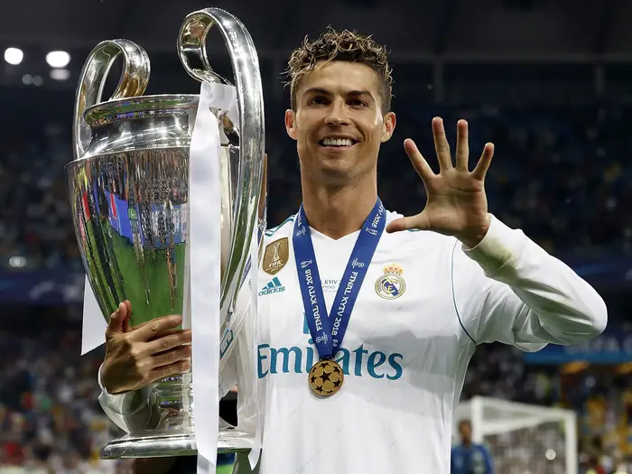
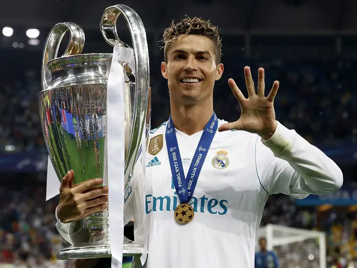

Conquistas
- 5 vezes vencedor da Bola de Ouro (2008, 2013, 2014, 2016, 2017)
- 4 vezes vencedor da Chuteira de Ouro (2007-08, 2010-11, 2013-14, 2014-15, 2023-2024)
- Várias vezes campeão da Liga dos Campeões da UEFA (2007-08, 2013-14, 2015-16, 2016-17, 2017-18)
- Várias vezes campeão das ligas nacionais
- Campeão da Eurocopa 2016 com a Seleção Portuguesa
- Campeão da UEFA Nations League com a Seleção Portuguesa em 2019
- Maior artilheiro da história da Seleção Portuguesa
- Recordista de gols na história da UEFA Champions League (134 gols)
- Recordista de gols na história das fases finais do Campeonato Europeu (14 gols)
- Primeiro jogador a marcar em 10 jogos consecutivos da UEFA Champions League
Curiosidades
Além de seu sucesso no futebol, Cristiano Ronaldo também é conhecido por sua generosidade e contribuições para várias causas beneficentes.
Imagens
 
